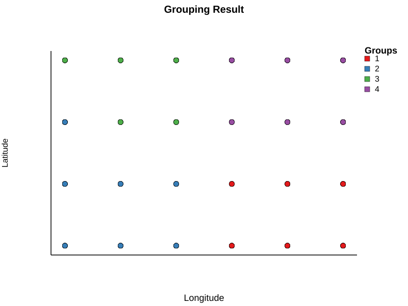

Dispersal-Niche Continuum Index (DNCI) Functions
The DNCI_multigroup() function in MetaCommunityMetrics is adapted from the DNCI_multigroup() function in the R package DNCImper (https://github.com/Corentin-Gibert-Paleontology/DNCImper), authored by Corentin Gibert, Gilles Escarguel, Annika Vilmi, Jianjun Wang, Aurelien Jamoneau, and Maxime Lopez, and licensed under GPL-3. The underlying methods are described in Gibert and Escarguel (2019) and Vilmi et al. (2021). This function was adapted from R to Julia in August 2024 and is redistributed here under GPL-3 in accordance with the terms of the original license. Modifications include: (1) empty sites and singletons (species occupying only one site at a given time) are permitted, whereas the original implementation does not allow them; and (2) a new output column has been added to flag five edge cases where permutation will fail, which are common when simulated data are used.
The function quantifies the balance between dispersal and niche processes within a metacommunity, providing insight into community structure and the relative influence of these two key ecological drivers. Vilmi et al. (2021) developed DNCI based on the PER-SIMPER method introduced by Gibert and Escarguel (2019) to compare observed community composition against three null model scenarios: (1) a niche assembly model that randomizes species identities while maintaining site-level species richness, (2) a dispersal assembly model that randomizes spatial locations while maintaining species-level occurrence frequencies, and (3) a combined model that maintains both constraints. PER-SIMPER uses the SIMPER analysis (Clarke 1993) to generate profiles of species contributions to average between-group dissimilarity for both the observed data and the community matrices permuted by the three null models, where dissimilarity is averaged across all site pairs. PER-SIMPER provides qualitative analysis of similarity between the observed SIMPER profile and null model PER-SIMPER profiles, while DNCI quantifies these similarities to calculate the relative importance of dispersal and niche processes.
Functionality Overview
Unlike the other metrics in this package, DNCI analysis operates on only one time point at a time. Positive DNCI values suggest niche processes dominate community assembly, while negative DNCI values suggest dispersal limitation is more influential at a given time point. DNCI values that do not differ significantly from zero suggest equal contributions from both processes at a given time point.
Before calculating the DNCI, groupings of sites are required, as the DNCI relies on analyzing community composition across site groups. This package provides DNCI_create_groups() to perform the necessary groupings for all time points, and DNCI_plot_groups() to visualize the groupings at a given time points, which are not available in the R implementation.
The Functions
MetaCommunityMetrics.DNCI_create_groups — FunctionDNCI_create_groups(time::AbstractVector, latitude::Vector{Float64}, longitude::Vector{Float64}, site::AbstractVector, species::AbstractVector, presence::AbstractVector) -> Dict{Int, DataFrame}This function creates groupings of sites for each unique time step in a dataset which can then used for calculating DNCI. Only presence-absence data can be used.
Arguments
time::AbstractVector: Vector or single value representing sampling dates. Can be strings, integers, or any other type.latitude::Vector: A vector indicating the latitude of each site.longitude::Vector: A vector indicating the longitude of each site.site::AbstractVector: A vector indicating the spatial location of each site. At least 10 sites are required for clustering.species::AbstractVector: A vector indicating the species present at each site.presence::AbstractVector: A vector indicating the presence (1) or absence (0) of species at each site.
Returns
Dict{Int, DataFrame}: A dictionary where each key represents a unique time point from the input data, with the corresponding value being aDataFramefor that time step. EachDataFramecontains the following columns:TimeLatitudeLongitudeSiteSpeciesPresenceGroup(indicating the assigned groups).
Details
- This function performs hierarchical clustering (complete linkage) on the geographical coordinates (latitude and longitude) of sampling sites at each time point separately and processes all time points in a single execution. A minimum of 10 sites is required to proceed with grouping; if fewer are present at a given time step, the grouping is returned as missing. Otherwise, the number of clusters k is initialized as the largest integer no greater than the total number of sites divided by 5 (with a minimum of 2). Sites are then assigned to k groups based on their geographical proximity.
- This function incorporates checks and adjustments to ensure the following conditions are met:
- At least 2 groups
- A minimum of 5 sites per group
- The difference in the number of taxa and sites between any two groups, relative to the larger group, does not exceed 40% and 30%, respectively
- Empty sites are allowed.
Example
julia> using MetaCommunityMetrics, Pipe, DataFrames
julia> df = load_sample_data()
53352×12 DataFrame
Row │ Year Month Day Sampling_date_order plot Species Abundance Presence Latitude Longitude standardized_temperature standardized_precipitation
│ Int64 Int64 Int64 Int64 Int64 String3 Int64 Int64 Float64 Float64 Float64 Float64
───────┼──────────────────────────────────────────────────────────────────────────────────────────────────────────────────────────────────────────────────────
1 │ 2010 1 16 1 1 BA 0 0 35.0 -110.0 0.829467 -1.4024
2 │ 2010 1 16 1 2 BA 0 0 35.0 -109.5 -1.12294 -0.0519895
3 │ 2010 1 16 1 4 BA 0 0 35.0 -108.5 -0.409808 -0.803663
4 │ 2010 1 16 1 8 BA 0 0 35.5 -109.5 -1.35913 -0.646369
5 │ 2010 1 16 1 9 BA 0 0 35.5 -109.0 0.0822 1.09485
⋮ │ ⋮ ⋮ ⋮ ⋮ ⋮ ⋮ ⋮ ⋮ ⋮ ⋮ ⋮ ⋮
53348 │ 2023 3 21 117 9 SH 0 0 35.5 -109.0 -0.571565 -0.836345
53349 │ 2023 3 21 117 10 SH 0 0 35.5 -108.5 -2.33729 -0.398522
53350 │ 2023 3 21 117 12 SH 1 1 35.5 -107.5 0.547169 1.03257
53351 │ 2023 3 21 117 16 SH 0 0 36.0 -108.5 -0.815015 0.95971
53352 │ 2023 3 21 117 23 SH 0 0 36.5 -108.0 0.48949 -1.59416
53342 rows omitted
julia> grouping_result = DNCI_create_groups(df.Sampling_date_order, df.Latitude, df.Longitude, df.plot, df.Species, df.Presence)
Warning: Group count fell below 2 at time 10, which is not permissible for DNCI analysis. Groups assigned as missing.
Warning: Group count fell below 2 at time 14, which is not permissible for DNCI analysis. Groups assigned as missing.
Warning: Group count fell below 2 at time 76, which is not permissible for DNCI analysis. Groups assigned as missing.
Warning: Group count fell below 2 at time 89, which is not permissible for DNCI analysis. Groups assigned as missing.
Warning: Group count fell below 2 at time 99, which is not permissible for DNCI analysis. Groups assigned as missing.
Dict{Int64, DataFrames.DataFrame} with 117 entries:
5 => 456×7 DataFrame…
56 => 456×7 DataFrame…
35 => 456×7 DataFrame…
55 => 456×7 DataFrame…
110 => 456×7 DataFrame…
114 => 456×7 DataFrame…
60 => 456×7 DataFrame…
30 => 456×7 DataFrame…
32 => 456×7 DataFrame…
6 => 456×7 DataFrame…
67 => 456×7 DataFrame…
45 => 456×7 DataFrame…
117 => 456×7 DataFrame…
73 => 456×7 DataFrame…
⋮ => ⋮
julia> grouping_result[10]
456×7 DataFrame
Row │ Time Latitude Longitude Site Species Presence Group
│ Int64 Float64 Float64 Int64 String3 Int64 Missing
─────┼───────────────────────────────────────────────────────────────
1 │ 10 35.0 -110.0 1 BA 0 missing
2 │ 10 35.0 -109.5 2 BA 0 missing
3 │ 10 35.0 -108.5 4 BA 0 missing
4 │ 10 35.5 -109.5 8 BA 0 missing
5 │ 10 35.5 -109.0 9 BA 0 missing
⋮ │ ⋮ ⋮ ⋮ ⋮ ⋮ ⋮ ⋮
452 │ 10 35.5 -110.0 7 SH 0 missing
453 │ 10 35.5 -108.5 10 SH 0 missing
454 │ 10 36.0 -108.5 16 SH 0 missing
455 │ 10 36.5 -108.0 23 SH 0 missing
456 │ 10 36.5 -107.5 24 SH 0 missing
446 rows omitted
julia> grouping_result[60]
456×7 DataFrame
Row │ Time Latitude Longitude Site Species Presence Group
│ Int64 Float64 Float64 Int64 String3 Int64 Int64?
─────┼──────────────────────────────────────────────────────────────
1 │ 60 35.0 -108.5 4 BA 0 1
2 │ 60 35.0 -108.0 5 BA 1 1
3 │ 60 35.0 -107.5 6 BA 0 1
4 │ 60 35.5 -110.0 7 BA 0 2
5 │ 60 35.5 -108.0 11 BA 0 1
⋮ │ ⋮ ⋮ ⋮ ⋮ ⋮ ⋮ ⋮
452 │ 60 35.5 -109.0 9 SH 0 2
453 │ 60 35.5 -108.5 10 SH 0 1
454 │ 60 35.5 -107.5 12 SH 1 1
455 │ 60 36.0 -108.5 16 SH 0 4
456 │ 60 36.5 -108.0 23 SH 0 4
446 rows omittedMetaCommunityMetrics.DNCI_plot_groups — FunctionDNCI_plot_groups(latitude::Vector{Float64}, longitude::Vector{Float64}, group::AbstractVector, output_file="groups.svg") -> StringVisualizes grouping results by generating an SVG image displaying the geographic coordinates and cluster assignments of sampling sites.
Arguments
latitude::Vector{Float64}: A vector of latitude coordinates of the sampling sites.longitude::Vector{Float64}: A vector of longitude coordinates of the sampling sites.group::AbstractVector: A vector indicating the group assignments for each data point.output_file::String="clusters.svg": The filename for the output SVG visualization. Default is "groups.svg".
Returns
String: The path to the created SVG file.
Details
- The functions provides visualization for one time point per function call.
- The function generates a standalone SVG file that can be viewed in any web browser or image viewer.
- Each group is assigned a unique color, and sampling sites are plotted based on their geographic coordinates.
- The visualization includes a legend identifying each group.
Example
julia> using MetaCommunityMetrics, Pipe, DataFrames
julia> df = load_sample_data()
53352×12 DataFrame
Row │ Year Month Day Sampling_date_order plot Species Abundance Presence Latitude Longitude standardized_temperature standardized_precipitation
│ Int64 Int64 Int64 Int64 Int64 String3 Int64 Int64 Float64 Float64 Float64 Float64
───────┼──────────────────────────────────────────────────────────────────────────────────────────────────────────────────────────────────────────────────────
1 │ 2010 1 16 1 1 BA 0 0 35.0 -110.0 0.829467 -1.4024
2 │ 2010 1 16 1 2 BA 0 0 35.0 -109.5 -1.12294 -0.0519895
3 │ 2010 1 16 1 4 BA 0 0 35.0 -108.5 -0.409808 -0.803663
4 │ 2010 1 16 1 8 BA 0 0 35.5 -109.5 -1.35913 -0.646369
5 │ 2010 1 16 1 9 BA 0 0 35.5 -109.0 0.0822 1.09485
⋮ │ ⋮ ⋮ ⋮ ⋮ ⋮ ⋮ ⋮ ⋮ ⋮ ⋮ ⋮ ⋮
53348 │ 2023 3 21 117 9 SH 0 0 35.5 -109.0 -0.571565 -0.836345
53349 │ 2023 3 21 117 10 SH 0 0 35.5 -108.5 -2.33729 -0.398522
53350 │ 2023 3 21 117 12 SH 1 1 35.5 -107.5 0.547169 1.03257
53351 │ 2023 3 21 117 16 SH 0 0 36.0 -108.5 -0.815015 0.95971
53352 │ 2023 3 21 117 23 SH 0 0 36.5 -108.0 0.48949 -1.59416
53342 rows omitted
julia> grouping_result = DNCI_create_groups(df.Sampling_date_order, df.Latitude, df.Longitude, df.plot, df.Species, df.Presence)
Warning: Group count fell below 2 at time 10, which is not permissible for DNCI analysis. Groups assigned as missing.
Warning: Group count fell below 2 at time 14, which is not permissible for DNCI analysis. Groups assigned as missing.
Warning: Group count fell below 2 at time 76, which is not permissible for DNCI analysis. Groups assigned as missing.
Warning: Group count fell below 2 at time 89, which is not permissible for DNCI analysis. Groups assigned as missing.
Warning: Group count fell below 2 at time 99, which is not permissible for DNCI analysis. Groups assigned as missing.
Dict{Int64, DataFrames.DataFrame} with 117 entries:
5 => 456×7 DataFrame…
56 => 456×7 DataFrame…
35 => 456×7 DataFrame…
55 => 456×7 DataFrame…
110 => 456×7 DataFrame…
114 => 456×7 DataFrame…
60 => 456×7 DataFrame…
30 => 456×7 DataFrame…
32 => 456×7 DataFrame…
6 => 456×7 DataFrame…
67 => 456×7 DataFrame…
45 => 456×7 DataFrame…
117 => 456×7 DataFrame…
73 => 456×7 DataFrame…
⋮ => ⋮
julia> grouping_result[60]
456×7 DataFrame
Row │ Time Latitude Longitude Site Species Presence Group
│ Int64 Float64 Float64 Int64 String3 Int64 Int64?
─────┼──────────────────────────────────────────────────────────────
1 │ 60 35.0 -108.5 4 BA 0 1
2 │ 60 35.0 -108.0 5 BA 1 1
3 │ 60 35.0 -107.5 6 BA 0 1
4 │ 60 35.5 -110.0 7 BA 0 2
5 │ 60 35.5 -108.0 11 BA 0 1
⋮ │ ⋮ ⋮ ⋮ ⋮ ⋮ ⋮ ⋮
452 │ 60 35.5 -109.0 9 SH 0 2
453 │ 60 35.5 -108.5 10 SH 0 1
454 │ 60 35.5 -107.5 12 SH 1 1
455 │ 60 36.0 -108.5 16 SH 0 4
456 │ 60 36.5 -108.0 23 SH 0 4
446 rows omitted
julia> DNCI_plot_groups(grouping_result[60].Latitude, grouping_result[60].Longitude, grouping_result[60].Group; output_file="groups.svg")
This plot shows the clustering result for time step 1 based on geographic coordinates:

MetaCommunityMetrics.DNCI_multigroup — FunctionDNCI_multigroup(comm::Matrix, groups::Vector, Nperm::Int=1000; Nperm_count::Bool=true) -> DataFrameCalculates the dispersal-niche continuum index (DNCI) for a metacommunity, a metric proposed by Vilmi et al. (2021). The DNCI quantifies the balance between dispersal and niche processes within a metacommunity, providing insight into community structure and the relative influence of these two key ecological drivers.
Arguments
comm::Matrix: A presence-absence data matrix where rows represent observations (e.g., sites) and columns represent species.groups::Vector: A vector indicating the group membership for each row in thecommmatrix. You can use theDNCI_create_groupsfunction to generate the group membership.Nperm::Int=1000: The number of permutations for significance testing. Default is 1000.Nperm_count::Bool=true: A flag indicating whether the number of permutations is printed. Default istrue.
Returns The returned DataFrame will have the following columns:
Group1: The first group in the pair.Group2: The second group in the pair.DNCI: The dispersal-niche continuum index, calculated as the difference between the mean deviation of the observed species contribution profile from the dispersal null model and the mean deviation from the niche null model, both standardized relative to a quasi-swap null model (which preserves both row and column sums). A DNCI value significantly below zero indicates that dispersal processes are the dominant drivers of community composition, while a value significantly above zero suggests that niche processes play a primary role. If the DNCI is not significantly different from zero, dispersal and niche processes contribute equally to spatial variations in community composition.CI_lower: The lower bound of the 95% confidence interval for the DNCI.CI_upper: The upper bound of the 95% confidence interval for the DNCI.Status: A string indicating how the DNCI is calculated. It is mainly used to flag edge cases as follows:normalindicates that the DNCI is calculated as normal.empty_communityindicates no species existed in any sites in a given group pair,DNCI,CI_lower, andCI_upperare returned asNaN.only_one_species_existsindicates that only one species existed in a given group pair, which is not possible to calculate relative species contribution to overall dissimilarity.DNCI,CI_lower, andCI_upperare returned asNaN.quasi_swap_permutation_not_possibleindicates that the quasi-swap permutation (a matrix permutation algorithms that preserves row and column sums) is not possible due to extreme matrix constraints that prevent any rearrangement of species across sites.DNCI,CI_lower, andCI_upperare returned asNaN.one_way_to_quasi_swapindicates that only one arrangement is possible under quasi-swap constraints, preventing generation of a null distribution.DNCI,CI_lower, andCI_upperare returned asNaN.inadequate_variation_quasi_swapindicates that quasi-swap permutations generated insufficient variation (coefficient of variation <1%) for reliable statistical inference.DNCI,CI_lower, andCI_upperare returned asNaN.
Details
- The function calculates the DNCI for each pair of groups in the input data. See the
DNCIcolumn description above for interpretation. - Different from the original implementation, empty sites and singletons (species that only occupy one site at a given time) are allowed, and a new
Statuscolumn has been added to flag five edge cases where the DNCI calculation will fail, which are common when simulated data are used. - This function is an adaptation of
DNCI_multigroup()from the R packageDNCImper(https://github.com/Corentin-Gibert-Paleontology/DNCImper), authored by Corentin Gibert, Gilles Escarguel, Annika Vilmi, Jianjun Wang, Aurelien Jamoneau, and Maxime Lopez, and licensed under GPL-3. First adapted from R to Julia in August 2024.
Example
julia> using MetaCommunityMetrics, Pipe, DataFrames, Random
julia> df = load_sample_data()
53352×12 DataFrame
Row │ Year Month Day Sampling_date_order plot Species Abundance Presence Latitude Longitude standardized_temperature standardized_precipitation
│ Int64 Int64 Int64 Int64 Int64 String3 Int64 Int64 Float64 Float64 Float64 Float64
───────┼──────────────────────────────────────────────────────────────────────────────────────────────────────────────────────────────────────────────────────
1 │ 2010 1 16 1 1 BA 0 0 35.0 -110.0 0.829467 -1.4024
2 │ 2010 1 16 1 2 BA 0 0 35.0 -109.5 -1.12294 -0.0519895
3 │ 2010 1 16 1 4 BA 0 0 35.0 -108.5 -0.409808 -0.803663
4 │ 2010 1 16 1 8 BA 0 0 35.5 -109.5 -1.35913 -0.646369
5 │ 2010 1 16 1 9 BA 0 0 35.5 -109.0 0.0822 1.09485
⋮ │ ⋮ ⋮ ⋮ ⋮ ⋮ ⋮ ⋮ ⋮ ⋮ ⋮ ⋮ ⋮
53348 │ 2023 3 21 117 9 SH 0 0 35.5 -109.0 -0.571565 -0.836345
53349 │ 2023 3 21 117 10 SH 0 0 35.5 -108.5 -2.33729 -0.398522
53350 │ 2023 3 21 117 12 SH 1 1 35.5 -107.5 0.547169 1.03257
53351 │ 2023 3 21 117 16 SH 0 0 36.0 -108.5 -0.815015 0.95971
53352 │ 2023 3 21 117 23 SH 0 0 36.5 -108.0 0.48949 -1.59416
53342 rows omitted
julia> grouping_result = DNCI_create_groups(df.Sampling_date_order, df.Latitude, df.Longitude, df.plot, df.Species, df.Presence)
Warning: Group count fell below 2 at time 10, which is not permissible for DNCI analysis. Groups assigned as missing.
Warning: Group count fell below 2 at time 14, which is not permissible for DNCI analysis. Groups assigned as missing.
Warning: Group count fell below 2 at time 76, which is not permissible for DNCI analysis. Groups assigned as missing.
Warning: Group count fell below 2 at time 89, which is not permissible for DNCI analysis. Groups assigned as missing.
Warning: Group count fell below 2 at time 99, which is not permissible for DNCI analysis. Groups assigned as missing.
Dict{Int64, DataFrames.DataFrame} with 117 entries:
5 => 456×7 DataFrame…
56 => 456×7 DataFrame…
35 => 456×7 DataFrame…
55 => 456×7 DataFrame…
110 => 456×7 DataFrame…
114 => 456×7 DataFrame…
60 => 456×7 DataFrame…
30 => 456×7 DataFrame…
32 => 456×7 DataFrame…
6 => 456×7 DataFrame…
67 => 456×7 DataFrame…
45 => 456×7 DataFrame…
117 => 456×7 DataFrame…
73 => 456×7 DataFrame…
⋮ => ⋮
julia> grouping_result[60]
456×7 DataFrame
Row │ Time Latitude Longitude Site Species Presence Group
│ Int64 Float64 Float64 Int64 String3 Int64 Int64?
─────┼──────────────────────────────────────────────────────────────
1 │ 60 35.0 -108.5 4 BA 0 1
2 │ 60 35.0 -108.0 5 BA 1 1
3 │ 60 35.0 -107.5 6 BA 0 1
4 │ 60 35.5 -110.0 7 BA 0 2
5 │ 60 35.5 -108.0 11 BA 0 1
⋮ │ ⋮ ⋮ ⋮ ⋮ ⋮ ⋮ ⋮
452 │ 60 35.5 -109.0 9 SH 0 2
453 │ 60 35.5 -108.5 10 SH 0 1
454 │ 60 35.5 -107.5 12 SH 1 1
455 │ 60 36.0 -108.5 16 SH 0 4
456 │ 60 36.5 -108.0 23 SH 0 4
446 rows omitted
julia> group_df = @pipe df |>
filter(row -> row[:Sampling_date_order] == 60, _) |>
select(_, [:plot, :Species, :Presence]) |>
innerjoin(_, grouping_result[60], on = [:plot => :Site, :Species], makeunique = true)|>
select(_, [:plot, :Species, :Presence, :Group]) |>
unstack(_, :Species, :Presence, fill=0)
24×21 DataFrame
Row │ plot Group BA DM DO DS NA OL OT PB PE PF PH PL PM PP RF RM RO SF SH
│ Int64 Int64? Int64 Int64 Int64 Int64 Int64 Int64 Int64 Int64 Int64 Int64 Int64 Int64 Int64 Int64 Int64 Int64 Int64 Int64 Int64
─────┼────────────────────────────────────────────────────────────────────────────────────────────────────────────────────────────────────────────────────
1 │ 4 1 0 1 1 0 0 1 1 0 0 0 0 0 0 0 0 1 0 1 0
2 │ 5 1 1 1 1 0 0 0 1 0 1 0 0 0 0 1 0 1 0 0 0
3 │ 6 1 0 1 1 0 0 0 0 0 1 0 0 0 0 1 0 1 0 0 0
4 │ 7 2 0 1 1 0 0 1 1 0 0 0 0 0 0 1 0 0 0 0 1
5 │ 11 1 0 1 1 0 0 0 1 0 0 0 0 0 0 1 0 0 0 0 0
⋮ │ ⋮ ⋮ ⋮ ⋮ ⋮ ⋮ ⋮ ⋮ ⋮ ⋮ ⋮ ⋮ ⋮ ⋮ ⋮ ⋮ ⋮ ⋮ ⋮ ⋮ ⋮
20 │ 9 2 0 1 0 0 0 1 1 0 1 0 0 0 0 0 0 0 0 0 0
21 │ 10 1 0 0 0 0 0 0 0 0 1 0 0 0 0 1 0 0 0 0 0
22 │ 12 1 0 0 0 0 1 0 1 0 1 0 0 0 1 0 0 1 0 0 1
23 │ 16 4 0 0 1 0 0 0 1 0 1 0 0 0 0 0 0 1 0 0 0
24 │ 23 4 0 1 0 0 0 0 0 1 0 0 0 0 1 0 0 0 0 0 0
14 rows omitted
julia> comm= @pipe group_df |>
select(_, Not([:plot,:Group])) |>
Matrix(_)
24×19 Matrix{Int64}:
0 1 1 0 0 1 1 0 0 0 0 0 0 0 0 1 0 1 0
1 1 1 0 0 0 1 0 1 0 0 0 0 1 0 1 0 0 0
0 1 1 0 0 0 0 0 1 0 0 0 0 1 0 1 0 0 0
0 1 1 0 0 1 1 0 0 0 0 0 0 1 0 0 0 0 1
0 1 1 0 0 0 1 0 0 0 0 0 0 1 0 0 0 0 0
0 1 1 0 0 0 0 1 1 0 0 0 0 0 0 1 0 0 0
1 1 1 0 0 0 0 0 0 0 0 0 0 1 0 1 0 0 0
⋮ ⋮ ⋮ ⋮
0 0 0 0 0 1 0 1 0 0 0 0 0 0 0 0 0 0 0
0 0 0 0 0 0 1 0 1 0 0 1 1 0 0 0 0 0 0
0 1 0 0 0 1 1 0 1 0 0 0 0 0 0 0 0 0 0
0 0 0 0 0 0 0 0 1 0 0 0 0 1 0 0 0 0 0
0 0 0 0 1 0 1 0 1 0 0 0 1 0 0 1 0 0 1
0 0 1 0 0 0 1 0 1 0 0 0 0 0 0 1 0 0 0
0 1 0 0 0 0 0 1 0 0 0 0 1 0 0 0 0 0 0
julia> Random.seed!(1234)
julia> DNCI_result = DNCI_multigroup(comm, group_df.Group, 1000; Nperm_count = false)
6×6 DataFrame
Row │ group1 group2 DNCI CI_lower CI_upper status
│ Int64 Int64 Float64 Float64 Float64 String
─────┼───────────────────────────────────────────────────────
1 │ 1 2 -3.41127 -4.49801 -2.32453 normal
2 │ 1 3 -2.44866 -3.47842 -1.41891 normal
3 │ 1 4 -2.3671 -3.59558 -1.13862 normal
4 │ 2 3 -2.65022 -3.79488 -1.50556 normal
5 │ 2 4 -3.0168 -4.23428 -1.79932 normal
6 │ 3 4 -1.83521 -2.81466 -0.855765 normalReferences
- Clarke, K. R. (1993). Non‐parametric multivariate analyses of changes in community structure. Australian journal of ecology, 18(1), 117-143. https://doi.org:https://doi.org/10.1111/j.1442-9993.1993.tb00438.x
- Gibert, C., & Escarguel, G. (2019). PER‐SIMPER—A new tool for inferring community assembly processes from taxon occurrences. Global Ecology and Biogeography, 28(3), 374-385. https://doi.org:https://doi.org/10.1111/geb.12859
- Vilmi, A., Gibert, C., Escarguel, G., Happonen, K., Heino, J., Jamoneau, A., ... & Wang, J. (2021). Dispersal–niche continuum index: a new quantitative metric for assessing the relative importance of dispersal versus niche processes in community assembly. Ecography, 44(3), 370-379. https://doi.org:https://doi.org/10.1111/ecog.05356